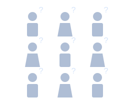
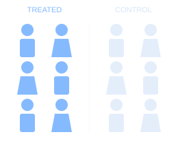
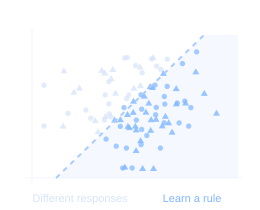
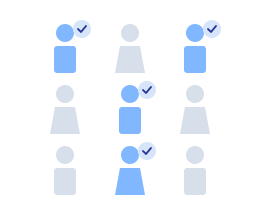

Density estimation using bootstrap quantile variance and quantile-mean covariance
With Gabriel Montes-Rojas · Communications in Statistics – Simulation and Computation, 52(4), 1449–1461, 2023. Published online in 2021.
Econometrics · Causal inference · Experimentation
From data to evidence.
From evidence to decisions.
I am a PhD economist with expertise in causal inference and econometrics. I develop statistical solutions to inform large-scale decision-making.
I am an economist on Amazon’s Prime Economics team, working on causal inference and economic modeling. Previously, I worked on pricing at Microsoft and supply-chain experimentation, customer analytics, and infrastructure investment at Amazon.
I also co-founded LAPDE, a public policy laboratory at the Universidad Nacional de Tucumán connecting applied research with equitable economic development.
From causal inference to policy learning
An experiment tells us what works.
Policy learning helps us decide for whom.

Different people. Unknown effects.

Compare treatment and control.

Find patterns in treatment effects.

Choose whom to treat.
A policy balances estimated benefits, costs, and constraints.
01 / Research
With Gabriel Montes-Rojas · Communications in Statistics – Simulation and Computation, 52(4), 1449–1461, 2023. Published online in 2021.
With Alejandro Danón and Andrés Ramasco · Ensayos de Política Económica, 3(3), 1–24, 2021.
02 / Teaching
Econometrics, causal inference, and macroeconomics.
Universidad Nacional de Tucumán · Graduate course · 2024
Course materialsUniversidad Nacional de Tucumán · Undergraduate course
Universidad Nacional de Tucumán · Undergraduate course
Brown University · PhD · Toru Kitagawa
Brown University · PhD · Peter Hull
Brown University · Undergraduate · Bobby Pakzad-Hurson
Universidad de San Andrés · José Fanelli
Universidad Nacional de Tucumán · Undergraduate
03 / Software
Code and public packages for empirical work.
My public repositories are available on GitHub.
Explore repositories04 / Media & Links
Conversations and public-facing work.
The Insider’s Guide
A short excerpt from my conversation on causal inference and economic decision-making.
Interview excerpt shared by Aahan Rathod. Original LinkedIn post
Listen to the full episode on Spotify